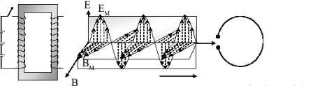
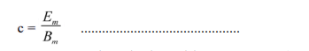

Timbulnya Gelombang Elektromagnetik
Seorang ilmuan fisika James Clerk Maxwell (1813-1879) telah menyumbangkan pengetahuan yang besar yaitu tentang gelombang elektromagnetik. Apakah yang dinamakan gelombang elektromagnetik itu ? Elektromagnetik berasal dari dua kata yaitu elektro atau listrik dan magnet. Dua kata ini tentu tidak asing bagi kalian karena materi listrik statis dan magnet pernah diajarkan di SMP. Keterkaitan kedua materi inilah yang dapat menimbulkan pandangan baru mengenai gelombang elektromagnetik.
Maxwell menjelaskan empat hal penting yang dapat menjelaskan terjadinya gelombang elektromagnetik ini. Keempat dasar itu dapat kalian perhatikan seperti berikut.
1. Disekitar muatan timbul medan listrik. Masih ingatkah kalian dengan materi listrik statis di kelas IX SMP? Konsep ini menjelaskan dengan lengkap tentang gaya elektrostatis dan medan listrik yang dikenal dengan hukum Coulomb.
2. Disekitar kawat berarus listrik akan timbul medan magnet yang disebut Induksi Magnet. Di kelas IX SMP kalian juga sudah mempelajari konsep kedua ini. Gejala ini ditemukan oleh Oersted. Penemuan itu adalah gejala menyimpangnya jarum kompas jika diletakkan di sekitar kawat berarus listrik, berarti disekitar kawat berarus timbul medan listrik. Penemuan ini juga menjelaskan bahwa ada kaitan antara listrik dan medan magnet.
3. Perubahan medan magnet dapat menimbulkan arus listrik. Masih ingat tentang Induksi Elektromagnetik, contohnya generator? Generator merupakan alat yang menghasilkan sumber listrik karena perubahan Fluks Magnet (medan magnet). Penemuan generator menjelaskan bahwa medan magnet yang berubah dapat menimbulkan arus listrik (medan listrik).
4. Penemuan-penemuan di atas dapat mengembangkan pandangan secara terbalik, yaitu perubahan medan listrik harus menimbulkan medan magnet
Keempat dasar di atas inilah yang oleh Maxwell dikembangkan menjadi keseimbangan alam. Menurut Maxwell energi yang tersimpan dalam bentuk medan magnet dapat berubah menjadi energi dalam bentuk medan listrik. Pembentukan ini dapat terjadi sebaliknya energi yang tersimpan dalam bentuk medan listrik dapat berubah menjadi energi dalam bentuk medan magnet, sehingga pembentukan ini dapat terjadi bolak-balik dan saling mempengaruhi dalam bentuk pancaran energi yang kemudian dinamakan gelombang elektromagnetik.

Pada Gambar berikut dapat dijelaskan bahwa saat saklar S ditutup maka akan ada arus yang mengalir pada kumparan dan sampai di plat sejajar. Pada kumparan akan timbul medan magnet dan pada plat sejajar akan timbul medan listrik.
Bagaimana jika saklar S dibuka dan ditutup secara bergantian? Pada saat saklar dibuka dan ditutup secara bergantian dengan cepat seperti induktor rumkorf maka pada kumparan dan plat sejajar dapat memancarkan gelombang elektromagnetik karena ada medan listrik (E) dan medan magnet (B) yang berubah-ubah secara gantian dan terus menerus. Bukti bahwa disitu terjadi rambatan energi adalah adanya gejala resonanso yang diterima pada loop. Gejala ini pertama kali ditemukan oleh Heinrich Hertz. Gambaran gerak gelombang elektromagnetik tersebut dapat dijelaskan dengan komponen gelombang medan magnet dan medan listrik yang saling tegak lurus. Dari gambar itulah Maxwell dapat menemukan hubungan persamaan berikut.

dengan :
c = cepat rambat gelombang elektromagnetik (m/s)
Em= kuat medan listrik maksimum (N/C)
Bm= kuat medan magnet maksimum (tesla)